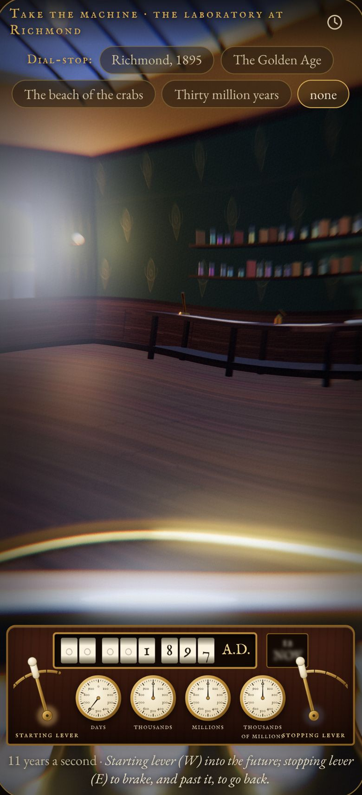

I
Press the lever over, and go
The laboratory goes “faint and hazy, then fainter and ever fainter”. Drag the starting lever and the dials run; the stopping lever brakes, and past rest takes you back. Bring the machine down on a date, or come in too hot and be flung headlong.
